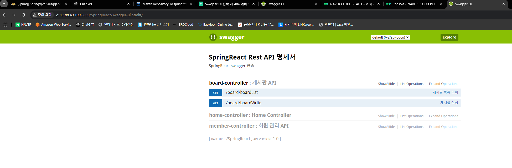

1. Swagger 의존성 추가
- pom.xml
<dependency> <groupId>io.springfox</groupId> <artifactId>springfox-swagger2</artifactId> <version>2.6.1</version> </dependency> <dependency> <groupId>io.springfox</groupId> <artifactId>springfox-swagger-ui</artifactId> <version>2.6.1</version> </dependency> ========================================= <dependency> <groupId>com.fasterxml.jackson.core</groupId> <artifactId>jackson-databind</artifactId> <version>2.13.2.2</version> </dependency> - Servlet-context에 swagger ui 리소스 매핑 진행
<?xml version="1.0" encoding="UTF-8"?> <beans:beans xmlns="http://www.springframework.org/schema/mvc" xmlns:xsi="http://www.w3.org/2001/XMLSchema-instance" xmlns:beans="http://www.springframework.org/schema/beans" xmlns:context="http://www.springframework.org/schema/context" xmlns:mvc="http://www.springframework.org/schema/mvc" xsi:schemaLocation=" http://www.springframework.org/schema/mvc https://www.springframework.org/schema/mvc/spring-mvc.xsd http://www.springframework.org/schema/beans https://www.springframework.org/schema/beans/spring-beans.xsd http://www.springframework.org/schema/context https://www.springframework.org/schema/context/spring-context.xsd"> <!-- Enables the Spring MVC @Controller programming model --> <mvc:annotation-driven /> <!-- Swagger Configuration --> <beans:bean id="swagger2Config" class="spring.conf.SwaggerConfig" /> <!-- Swagger UI 리소스 매핑 --> <mvc:resources mapping="/swagger-ui.html" location="classpath:/META-INF/resources/" /> <mvc:resources mapping="/webjars/**" location="classpath:/META-INF/resources/webjars/" /> </beans:beans>
2. SwaggerConfig 작성
@Configuration
@EnableSwagger2 // Swagger2 활성화
@EnableWebMvc // 스프링의 Web MVC 설정을 활성화하여 Swagger의 요청 경로가 Web MVC로 설정
public class SwaggerConfig {
@Bean // 필수항목
public Docket api() { // Docket은 Swagger의 주요 설정을 담고 있는 객체이다.
final ApiInfo apiInfo = new ApiInfoBuilder()
.title("SpringReact Rest API 명세서")
.description("<h3>SpringReact swagger 연습</h3>")
.version("1.0")
.build();
return new Docket(DocumentationType.SWAGGER_2) // Swagger 2를 사용하도록 지정
// 앞서 정의한 apiInfo를 Docket에 적용하여 Swagger UI에 표시할 문서 정보로 설정
.apiInfo(apiInfo)
.select() // API 선택 기준을 정의하는 ApiSelectorBuilder 객체를 반환
// basePackage("com") 경로 내의 컨트롤러에 대해서만 Swagger 문서를 생성
.apis(RequestHandlerSelectors.basePackage("com"))
.paths(regex("/.*")) // Swagger 문서에 포함할 경로를 regex를 통해 설정 가능
.build();
}
}
ApiInfo는 Swagger 문서 상단에 표시될 API 문서의 정보를 설정하는 객체이다.
3. Controller에 Swagger 문법 적용
- Controller에 Swagger 문법 적용
- MemberController
// Swagger 문서화 대상임을 지정 // value: Swagger 문서에서 이 컨트롤러의 이름을 지정 // description: 컨트롤러의 역할이나 목적에 대한 설명을 추가 @Api(value = "MemberController", description = "회원 관리 API") @RequestMapping(value = "/member") @RestController @CrossOrigin(origins = "http://www.springreact.store", allowCredentials = "true") public class MemberController { @Autowired MemberService memberService; @ApiOperation( // 메서드에 대한 Swagger 설명을 추가 value = "로그인", notes = "회원 로그인 API입니다.", httpMethod = "POST", consumes = "application/json", produces = "application/json" ) @ApiResponses({ // Response Message에 대한 Swagger 설명 @ApiResponse(code = 200, message = "로그인 성공"), @ApiResponse(code = 401, message = "로그인 실패") }) @ApiImplicitParams({ // 요청 파라미터에 대한 설명을 추가 @ApiImplicitParam(name = "credentials", value = "로그인 정보", required = true, dataType = "Map", paramType = "body", example = "{\"id\": \"yourId\", \"pwd\": \"yourPassword\"}") }) @PostMapping("/login") @ResponseBody public String login(@RequestBody Map<String, String> credentials) { String id = credentials.get("id"); String pwd = credentials.get("pwd"); return memberService.login(id, pwd); } } - BoardController
@Api(value = "BoardController", description = "게시판 API") // Controller에 대한 Swagger 설명 @RestController @RequestMapping(value = "/board") @CrossOrigin(origins = "http://www.springreact.store", allowCredentials = "true") public class BoardController { @Autowired private BoardService boardService; @ApiOperation( value = "게시글 작성", notes = "새로운 게시글을 작성하는 API입니다.", httpMethod = "GET" ) @ApiResponses({ @ApiResponse(code = 200, message = "게시글 작성 성공"), @ApiResponse(code = 400, message = "잘못된 요청 파라미터") }) @ApiImplicitParams({ @ApiImplicitParam(name = "subject", value = "게시글 제목", required = true, dataType = "String", paramType = "query"), @ApiImplicitParam(name = "content", value = "게시글 내용", required = true, dataType = "String", paramType = "query") }) @GetMapping(value = "/boardWrite") public void boardWrite(@RequestParam String subject, @RequestParam String content) { System.out.println(subject); boardService.boardWrite(subject, content); } @ApiOperation( value = "게시글 목록 조회", notes = "게시글 목록을 조회하는 API입니다.", httpMethod = "GET" ) @ApiResponses({ @ApiResponse(code = 200, message = "게시글 목록 조회 성공"), @ApiResponse(code = 500, message = "서버 오류") }) @GetMapping(value = "/boardList") public List<BoardDTO> boardList() { // List<BoardDTO> 객체를 자동으로 JSON 배열로 변환하여 보냄 return boardService.boardList(); } }
- MemberController
- Swagger 배포 결과
